Redis系列之应用
本文为掘金小册Redis学习笔记
应用 1：千帆竞发 — 分布式锁
分布式应用进行逻辑处理时经常会遇到并发问题。
比如一个操作要修改用户的状态，修改状态需要先读出用户的状态，在内存里进行修改，改完了再存回去。如果这样的操作同时进行了，就会出现并发问题，因为读取和保存状态这两个操作不是原子的。（Wiki 解释：所谓原子操作是指不会被线程调度机制打断的操作；这种操作一旦开始，就一直运行到结束，中间不会有任何 context switch 线程切换。）
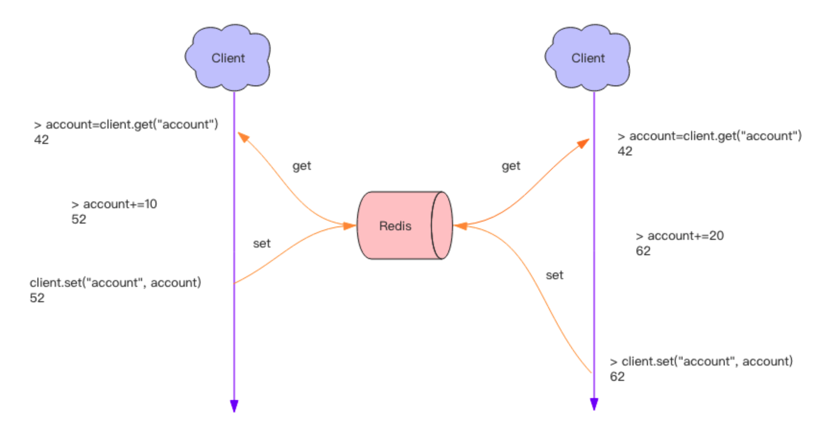
这个时候就要使用到分布式锁来限制程序的并发执行。Redis 分布式锁使用非常广泛，它是面试的重要考点之一，很多同学都知道这个知识，也大致知道分布式锁的原理，但是具体到细节的使用上往往并不完全正确。
分布式锁
分布式锁本质上要实现的目标就是在 Redis 里面占一个“坑”，当别的进程也要来占时，发现已经有人蹲在那里了，就只好放弃或者稍后再试。
占坑一般是使用 setnx(set if not exists) 指令，只允许被一个客户端占坑。先来先占， 用完了，再调用 del 指令释放茅坑。(SETEX如果之前已经存在会覆盖)
127.0.0.1:6379> setnx apple true
(integer) 1
127.0.0.1:6379> setnx apple true
(integer) 0 #不能继续加锁了
127.0.0.1:6379> del apple
(integer) 1
127.0.0.1:6379> setnx apple true
(integer) 1#删除后可以加锁了
但是有个问题，如果逻辑执行到中间出现异常了，可能会导致 del 指令没有被调用，这样就会陷入死锁，锁永远得不到释放。
于是我们在拿到锁之后，再给锁加上一个过期时间，比如 5s，这样即使中间出现异常也可以保证 5 秒之后锁会自动释放。
> setnx lock_codehole true
OK
> expire lock_codehole 5
... do something critical ...
> del lock_codehole
(integer) 1
但是以上逻辑还有问题。如果在 setnx 和 expire 之间服务器进程突然挂掉了，可能是因为机器掉电或者是被人为杀掉的，就会导致 expire 得不到执行，也会造成死锁。
这种问题的根源就在于 setnx 和 expire 是两条指令而不是原子指令。如果这两条指令可以一起执行就不会出现问题。也许你会想到用 Redis 事务来解决。但是这里不行，因为 expire 是依赖于 setnx 的执行结果的，如果 setnx 没抢到锁，expire 是不应该执行的。事务里没有 if-else 分支逻辑，事务的特点是一口气执行，要么全部执行要么一个都不执行。
为了解决这个疑难，Redis 开源社区涌现了一堆分布式锁的 library，专门用来解决这个问题。实现方法极为复杂，小白用户一般要费很大的精力才可以搞懂。如果你需要使用分布式锁，意味着你不能仅仅使用 Jedis 或者 redis-py 就行了，还得引入分布式锁的 library。

为了治理这个乱象，Redis 2.8 版本中作者加入了 set 指令的扩展参数，使得 setnx 和 expire 指令可以一起执行，彻底解决了分布式锁的乱象。从此以后所有的第三方分布式锁 library 可以休息了。
SET key value [EX seconds] [PX milliseconds] [NX|XX]
EX seconds： 将键的过期时间设置为seconds秒。 执行SET key value EX seconds的效果等同于执行SETEX key seconds value。PX milliseconds： 将键的过期时间设置为milliseconds毫秒。 执行SET key value PX milliseconds的效果等同于执行PSETEX key milliseconds value。NX： 只在键不存在时， 才对键进行设置操作。 执行SET key value NX的效果等同于执行SETNX key value。XX： 只在键已经存在时， 才对键进行设置操作。
> set lock_codehole true ex 5 nx
OK
... do something critical ...
> del lock_codehole
上面这个指令就是 setnx 和 expire 组合在一起的原子指令，它就是分布式锁的奥义所在。
超时问题
Redis 的分布式锁不能解决超时问题，如果在加锁和释放锁之间的逻辑执行的太长，以至于超出了锁的超时限制，就会出现问题。因为这时候第一个线程持有的锁过期了，临界区的逻辑还没有执行完，这个时候第二个线程就提前重新持有了这把锁，导致临界区代码不能得到严格的串行执行。
为了避免这个问题，Redis 分布式锁不要用于较长时间的任务。如果真的偶尔出现了，数据出现的小波错乱可能需要人工介入解决。
tag = random.nextint() # 随机数
if redis.set(key, tag, nx=True, ex=5):
do_something()
redis.delifequals(key, tag) # 假想的 delifequals 指令
有一个稍微安全一点的方案是为 set 指令的 value 参数设置为一个随机数，释放锁时先匹配随机数是否一致，然后再删除 key，这是为了确保当前线程占有的锁不会被其它线程释放，除非这个锁是过期了被服务器自动释放的。 但是匹配 value 和删除 key 不是一个原子操作，Redis 也没有提供类似于delifequals这样的指令，这就需要使用 Lua 脚本来处理了，因为 Lua 脚本可以保证连续多个指令的原子性执行。
# delifequals
if redis.call("get",KEYS[1]) == ARGV[1] then
return redis.call("del",KEYS[1])
else
return 0
end
但是这也不是一个完美的方案，它只是相对安全一点，因为如果真的超时了，当前线程的逻辑没有执行完，其它线程也会乘虚而入。
可重入性
可重入性是指线程在持有锁的情况下再次请求加锁，如果一个锁支持同一个线程的多次加锁，那么这个锁就是可重入的。比如 Java 语言里有个 ReentrantLock 就是可重入锁。Redis 分布式锁如果要支持可重入，需要对客户端的 set 方法进行包装，使用线程的 Threadlocal 变量存储当前持有锁的计数。
# -*- coding: utf-8
import redis
import threading
locks = threading.local()
locks.redis = {}
def key_for(user_id):
return "account_{}".format(user_id)
def _lock(client, key):
return bool(client.set(key, True, nx=True, ex=5))
def _unlock(client, key):
client.delete(key)
def lock(client, user_id):
key = key_for(user_id)
if key in locks.redis:
locks.redis[key] += 1
return True
ok = _lock(client, key)
if not ok:
return False
locks.redis[key] = 1
return True
def unlock(client, user_id):
key = key_for(user_id)
if key in locks.redis:
locks.redis[key] -= 1
if locks.redis[key] <= 0:
del locks.redis[key]
self._unlock(key)
return True
return False
client = redis.StrictRedis()
print "lock", lock(client, "codehole")
print "lock", lock(client, "codehole")
print "unlock", unlock(client, "codehole")
print "unlock", unlock(client, "codehole")
以上还不是可重入锁的全部，精确一点还需要考虑内存锁计数的过期时间，代码复杂度将会继续升高。老钱不推荐使用可重入锁，它加重了客户端的复杂性，在编写业务方法时注意在逻辑结构上进行调整完全可以不使用可重入锁。下面是 Java 版本的可重入锁。
public class RedisWithReentrantLock {
private ThreadLocal<Map<String, Integer>> lockers = new ThreadLocal<>();
private Jedis jedis;
public RedisWithReentrantLock(Jedis jedis) {
this.jedis = jedis;
}
private boolean _lock(String key) {
return jedis.set(key, "", "nx", "ex", 5L) != null;
}
private void _unlock(String key) {
jedis.del(key);
}
private Map<String, Integer> currentLockers() {
Map<String, Integer> refs = lockers.get();
if (refs != null) {
return refs;
}
lockers.set(new HashMap<>());
return lockers.get();
}
public boolean lock(String key) {
Map<String, Integer> refs = currentLockers();
Integer refCnt = refs.get(key);
if (refCnt != null) {
refs.put(key, refCnt + 1);
return true;
}
boolean ok = this._lock(key);
if (!ok) {
return false;
}
refs.put(key, 1);
return true;
}
public boolean unlock(String key) {
Map<String, Integer> refs = currentLockers();
Integer refCnt = refs.get(key);
if (refCnt == null) {
return false;
}
refCnt -= 1;
if (refCnt > 0) {
refs.put(key, refCnt);
} else {
refs.remove(key);
this._unlock(key);
}
return true;
}
public static void main(String[] args) {
Jedis jedis = new Jedis();
RedisWithReentrantLock redis = new RedisWithReentrantLock(jedis);
System.out.println(redis.lock("codehole"));
System.out.println(redis.lock("codehole"));
System.out.println(redis.unlock("codehole"));
System.out.println(redis.unlock("codehole"));
}
}
跟 Python 版本区别不大，也是基于 ThreadLocal 和引用计数。
总结：
分布式锁可用设置了超时的set/setnx来实现
应用 2：缓兵之计 — 延时队列
我们平时习惯于使用 Rabbitmq 和 Kafka 作为消息队列中间件，来给应用程序之间增加异步消息传递功能。这两个中间件都是专业的消息队列中间件，特性之多超出了大多数人的理解能力。
使用过 Rabbitmq 的同学知道它使用起来有多复杂，发消息之前要创建 Exchange，再创建 Queue，还要将 Queue 和 Exchange 通过某种规则绑定起来，发消息的时候要指定 routing-key，还要控制头部信息。消费者在消费消息之前也要进行上面一系列的繁琐过程。但是绝大多数情况下，虽然我们的消息队列只有一组消费者，但还是需要经历上面这些繁琐的过程。
有了 Redis，它就可以让我们解脱出来，对于那些只有一组消费者的消息队列，使用 Redis 就可以非常轻松的搞定。Redis 的消息队列不是专业的消息队列，它没有非常多的高级特性，没有 ack 保证，如果对消息的可靠性有着极致的追求，那么它就不适合使用。
异步消息队列
Redis 的 list(列表) 数据结构常用来作为异步消息队列使用，使用rpush/lpush操作入队列，使用lpop 和 rpop来出队列。
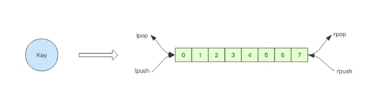
rpush表示在右边添加apple banana pear 顺序进入，apple在最左侧 ,可以理解为新要素不断的加入到旧要素的右边
rpush notify-queue apple banana pear
(integer) 3
llen notify-queue
(integer) 3
lpop notify-queue #从左侧压出
"apple"
llen notify-queue
(integer) 2
lpop notify-queue
"banana"
llen notify-queue
(integer) 1
lpop notify-queue
"pear"
llen notify-queue
(integer) 0
lpop notify-queue
(nil)
上面是 rpush 和 lpop 结合使用的例子。还可以使用 lpush 和 rpop 结合使用，效果是一样的。这里不再赘述。
队列空了怎么办？
客户端是通过队列的 pop 操作来获取消息，然后进行处理。处理完了再接着获取消息，再进行处理。如此循环往复，这便是作为队列消费者的客户端的生命周期。
可是如果队列空了，客户端就会陷入 pop 的死循环，不停地 pop，没有数据，接着再 pop，又没有数据。这就是浪费生命的空轮询。空轮询不但拉高了客户端的 CPU，redis 的 QPS 也会被拉高，如果这样空轮询的客户端有几十来个，Redis 的慢查询可能会显著增多。
通常我们使用 sleep 来解决这个问题，让线程睡一会，睡个 1s 钟就可以了。不但客户端的 CPU 能降下来，Redis 的 QPS 也降下来了。
队列延迟
用上面睡眠的办法可以解决问题。但是有个小问题，那就是睡眠会导致消息的延迟增大。如果只有 1 个消费者，那么这个延迟就是 1s。如果有多个消费者，这个延迟会有所下降，因为每个消费者的睡觉时间是岔开来的。
有没有什么办法能显著降低延迟呢？你当然可以很快想到：那就把睡觉的时间缩短点。这种方式当然可以，不过有没有更好的解决方案呢？当然也有，那就是 blpop/brpop。
这两个指令的前缀字符b代表的是blocking，也就是阻塞读。
阻塞读在队列没有数据的时候，会立即进入休眠状态，一旦数据到来，则立刻醒过来。消息的延迟几乎为零。用blpop/brpop替代前面的lpop/rpop，就完美解决了上面的问题。
空闲连接自动断开
你以为上面的方案真的很完美么？先别急着开心，其实他还有个问题需要解决。
什么问题？—— 空闲连接的问题。
如果线程一直阻塞在哪里，Redis 的客户端连接就成了闲置连接，闲置过久，服务器一般会主动断开连接，减少闲置资源占用。这个时候blpop/brpop会抛出异常来。
所以编写客户端消费者的时候要小心，注意捕获异常，还要重试。
锁冲突处理
上节课我们讲了分布式锁的问题，但是没有提到客户端在处理请求时加锁没加成功怎么办。一般有 3 种策略来处理加锁失败：
- 直接抛出异常，通知用户稍后重试；
- sleep 一会再重试；
- 将请求转移至延时队列，过一会再试；
直接抛出特定类型的异常
这种方式比较适合由用户直接发起的请求，用户看到错误对话框后，会先阅读对话框的内容，再点击重试，这样就可以起到人工延时的效果。如果考虑到用户体验，可以由前端的代码替代用户自己来进行延时重试控制。它本质上是对当前请求的放弃，由用户决定是否重新发起新的请求。
sleep
sleep 会阻塞当前的消息处理线程，会导致队列的后续消息处理出现延迟。如果碰撞的比较频繁或者队列里消息比较多，sleep 可能并不合适。如果因为个别死锁的 key 导致加锁不成功，线程会彻底堵死，导致后续消息永远得不到及时处理。
延时队列
这种方式比较适合异步消息处理，将当前冲突的请求扔到另一个队列延后处理以避开冲突。
延时队列的实现
延时队列可以通过 Redis 的 zset(有序列表) 来实现。我们将消息序列化成一个字符串作为 zset 的value，这个消息的到期处理时间作为score，然后用多个线程轮询 zset 获取到期的任务进行处理，多个线程是为了保障可用性，万一挂了一个线程还有其它线程可以继续处理。因为有多个线程，所以需要考虑并发争抢任务，确保任务不能被多次执行。
def delay(msg):
msg.id = str(uuid.uuid4()) # 保证 value 值唯一
value = json.dumps(msg)
retry_ts = time.time() + 5 # 5 秒后重试
redis.zadd("delay-queue", retry_ts, value)
def loop():
while True:
# 最多取 1 条
values = redis.zrangebyscore("delay-queue", 0, time.time(), start=0, num=1)
if not values:
time.sleep(1) # 延时队列空的，休息 1s
continue
value = values[0] # 拿第一条，也只有一条
success = redis.zrem("delay-queue", value) # 从消息队列中移除该消息
if success: # 因为有多进程并发的可能，最终只会有一个进程可以抢到消息
msg = json.loads(value)
handle_msg(msg)
Redis 的 zrem(删除) 方法是多线程多进程争抢任务的关键，它的返回值决定了当前实例有没有抢到任务，因为 loop 方法可能会被多个线程、多个进程调用，同一个任务可能会被多个进程线程抢到，通过 zrem 来决定唯一的属主。
同时，我们要注意一定要对 handle_msg 进行异常捕获，避免因为个别任务处理问题导致循环异常退出。以下是 Java 版本的延时队列实现，因为要使用到 Json 序列化，所以还需要 fastjson 库的支持。
import java.lang.reflect.Type;
import java.util.Set;
import java.util.UUID;
import com.alibaba.fastjson.JSON;
import com.alibaba.fastjson.TypeReference;
import redis.clients.jedis.Jedis;
public class RedisDelayingQueue<T> {
static class TaskItem<T> {
public String id;
public T msg;
}
// fastjson 序列化对象中存在 generic 类型时，需要使用 TypeReference
private Type TaskType = new TypeReference<TaskItem<T>>() {
}.getType();
private Jedis jedis;
private String queueKey;
public RedisDelayingQueue(Jedis jedis, String queueKey) {
this.jedis = jedis;
this.queueKey = queueKey;
}
public void delay(T msg) {
TaskItem<T> task = new TaskItem<T>();
task.id = UUID.randomUUID().toString(); // 分配唯一的 uuid
task.msg = msg;
String s = JSON.toJSONString(task); // fastjson 序列化
jedis.zadd(queueKey, System.currentTimeMillis() + 5000, s); // 塞入延时队列 ,5s 后再试
}
public void loop() {
while (!Thread.interrupted()) {
// 只取一条
Set<String> values = jedis.zrangeByScore(queueKey, 0, System.currentTimeMillis(), 0, 1);
if (values.isEmpty()) {
try {
Thread.sleep(500); // 歇会继续
} catch (InterruptedException e) {
break;
}
continue;
}
String s = values.iterator().next();
if (jedis.zrem(queueKey, s) > 0) { // 抢到了
TaskItem<T> task = JSON.parseObject(s, TaskType); // fastjson 反序列化
this.handleMsg(task.msg);
}
}
}
public void handleMsg(T msg) {
System.out.println(msg);
}
public static void main(String[] args) {
Jedis jedis = new Jedis();
RedisDelayingQueue<String> queue = new RedisDelayingQueue<>(jedis, "q-demo");
Thread producer = new Thread() {
public void run() {
for (int i = 0; i < 10; i++) {
queue.delay("codehole" + i);
}
}
};
Thread consumer = new Thread() {
public void run() {
queue.loop();
}
};
producer.start();
consumer.start();
try {
producer.join();
Thread.sleep(6000);
consumer.interrupt();
consumer.join();
} catch (InterruptedException e) {
}
}
}
使用时间作为分数进行排序,其中zrangeByScore用的是这个api
zrangeByScore(String key, String min, String max, int offset, int count)
进一步优化
上面的算法中同一个任务可能会被多个进程取到之后再使用 zrem 进行争抢，那些没抢到的进程都是白取了一次任务，这是浪费。可以考虑使用 lua scripting 来优化一下这个逻辑，将 zrangebyscore 和 zrem 一同挪到服务器端进行原子化操作，这样多个进程之间争抢任务时就不会出现这种浪费了。
总结：
消息队列可使用list的blpop/brpop来实现，延时队列可使用zset来实现
应用 3：节衣缩食 — 位图
在我们平时开发过程中，会有一些 bool 型数据需要存取，比如用户一年的签到记录，签了是 1，没签是 0，要记录 365 天。如果使用普通的 key/value，每个用户要记录 365 个，当用户上亿的时候，需要的存储空间是惊人的。
为了解决这个问题，Redis 提供了位图数据结构，这样每天的签到记录只占据一个位(bit)，365 天就是 365 个位，46 个字节(byte) (一个稍长一点的字符串) 就可以完全容纳下，这就大大节约了存储空间。

位图不是特殊的数据结构，它的内容其实就是普通的字符串，也就是 byte 数组。我们可以使用普通的 get/set 直接获取和设置整个位图的内容，也可以使用位图操作 getbit/setbit 等将 byte 数组看成「位数组」来处理。
当我们要统计月活的时候，因为需要去重，需要使用 set 来记录所有活跃用户的 id，这非常浪费内存。这时就可以考虑使用位图来标记用户的活跃状态。每个用户会都在这个位图的一个确定位置上，0 表示不活跃，1 表示活跃。然后到月底遍历一次位图就可以得到月度活跃用户数。不过这个方法也是有条件的，那就是 userid 是整数连续的，并且活跃占比较高，否则可能得不偿失。
如果你对 Redis 的位图有所了解，它将会是你的面试加分项。
关于位图，可能大家不太熟悉，
那么位图能干啥呢？位图的内容其实就是普通的字符串，也就是byte数组，我们都知道
byte = 8 位无符号整数 = 0 到 255
说个场景。比如你处理一些业务时候，往往会存在 是或者不是 这样的数据，那么这种数据还是频繁去查看和请求，从数据方面和请求次数方面都是非常的大的。那么Redis位图可以帮你解决。每天的记录只占据一个位，他的存储格式：0 1 0 1 0 1。在操作方面我们可以使用：get/set， gitbit/setbit等将byte数组看成【位数组】来处理。
说说他的特性：
位数组是自动扩展的，如果超出现有内容范围，它会自动将位数组进行零扩充。
当然一般这种业务数据，都往往少不了统计，查找，那么位图指令统计bitcount和查找bitpos。bitcount 用来统计指定位置范围内 1 的个数，bitpos 用来查找指定范围内出现的第一个 0 或 1。
bitpos指定的范围是【start，end】。注意的是start 和 end 参数是字节索引，也就是说指定的位范围必须是 8 的倍数，
setbit命令
设置或修改key上的偏移量（offset）的位（value）的值。
- 语法：
setbit key offset value - 返回值：指定偏移量
（offset）原来存储的值
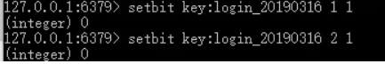
getbit命令
查询key所存储的字符串值，获取偏移量上的位。
- 语法：
getbit key offset - 返回值：返回指定
key上的偏移量，若key不存在，那么返回0。
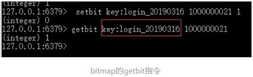
getcount命令
计算给定key的字符串值中，被设置为1的位bit的数量
- 语法：
bitcount key [start] [end] - 返回值：1比特位的数量
注意：setbit是设置或者清除bit位置。这个是统计key出现1的次数。
（友情提示：）需要注意的是：[start][end]（单位）实际是byte，这是什么意思呢？进入redis实际上是乘以8。
场景
用户日活，月活，留存率的统计
实际是统计每天的用户数量。
- key：日期；
- offset：用户id【数字或者二进制】；要求用户id连续
- value：是否登录/做任意操作；
按日期生成一个位图（bitmap）
- 计算日活：
bitcount key获取key为1的数量； - 计算月活：可把30天的所有
bitmap做or计算，在进行bitcount计算； - 计算留存率：
昨日留存=昨天今天连续登录的人数/昨天登录的人数，即昨天的bitmap与今天的bitmap进行and计算，在除以昨天bitcount的数量
实现用户上线次数的统计
实际上是以用户为主体
- key：用户id；
- offset：日期；
- value：是否上线；
setbit xiaopang 1 0；记录小胖的上线天数，bitcount xiaopang统计小胖的上线天数。
用户在线状态和人数统计
也是使用一个bitmap，使用用户id来充当offset，上线标识是1，下线标识是0，也可轻松统计在线人数。
优点
位图操作是用来操作比特位的，其优点是节省内存空间。为什么可以节省内存空间呢？假如我们需要存储100万个用户的登录状态，使用位图的话最少只需要100万个比特位（比特位1表示登录，比特位0表示未登录）就可以存储了，而如果以字符串的形式存储，比如说以userId为key，是否登录（字符串“1”表示登录，字符串“0”表示未登录）为value进行存储的话，就需要存储100万个字符串了，相比之下使用位图存储占用的空间要小得多，这就是位图存储的优势。
应用 4：四两拨千斤 ——HyperLogLog
在开始这一节之前，我们先思考一个常见的业务问题：如果你负责开发维护一个大型的网站，有一天老板找产品经理要网站每个网页每天的 UV 数据，然后让你来开发这个统计模块，你会如何实现？
如果统计 PV 那非常好办，给每个网页一个独立的 Redis 计数器就可以了，这个计数器的 key 后缀加上当天的日期。这样来一个请求，incrby 一次，最终就可以统计出所有的 PV 数据。
但是 UV 不一样，它要去重，同一个用户一天之内的多次访问请求只能计数一次。这就要求每一个网页请求都需要带上用户的 ID，无论是登陆用户还是未登陆用户都需要一个唯一 ID 来标识。
你也许已经想到了一个简单的方案，那就是为每一个页面一个独立的 set 集合来存储所有当天访问过此页面的用户 ID。当一个请求过来时，我们使用 sadd 将用户 ID 塞进去就可以了。通过 scard 可以取出这个集合的大小，这个数字就是这个页面的 UV 数据。没错，这是一个非常简单的方案。
但是，如果你的页面访问量非常大，比如一个爆款页面几千万的 UV，你需要一个很大的 set 集合来统计，这就非常浪费空间。如果这样的页面很多，那所需要的存储空间是惊人的。为这样一个去重功能就耗费这样多的存储空间，值得么？其实老板需要的数据又不需要太精确，105w 和 106w 这两个数字对于老板们来说并没有多大区别，So，有没有更好的解决方案呢？
这就是本节要引入的一个解决方案，Redis 提供了 HyperLogLog 数据结构就是用来解决这种统计问题的。HyperLogLog 提供不精确的去重计数方案，虽然不精确但是也不是非常不精确，标准误差是 0.81%，这样的精确度已经可以满足上面的 UV 统计需求了。
HyperLogLog 数据结构是 Redis 的高级数据结构，它非常有用，但是令人感到意外的是，使用过它的人非常少。
使用方法
HyperLogLog 提供了两个指令 pfadd 和 pfcount，根据字面意义很好理解，一个是增加计数，一个是获取计数。pfadd 用法和 set 集合的 sadd 是一样的，来一个用户 ID，就将用户 ID 塞进去就是。pfcount 和 scard 用法是一样的，直接获取计数值。
127.0.0.1:6379> pfadd codehole user1
(integer) 1
127.0.0.1:6379> pfcount codehole
(integer) 1
127.0.0.1:6379> pfadd codehole user2
(integer) 1
127.0.0.1:6379> pfcount codehole
(integer) 2
127.0.0.1:6379> pfadd codehole user3
(integer) 1
127.0.0.1:6379> pfcount codehole
(integer) 3
127.0.0.1:6379> pfadd codehole user4
(integer) 1
127.0.0.1:6379> pfcount codehole
(integer) 4
127.0.0.1:6379> pfadd codehole user5
(integer) 1
127.0.0.1:6379> pfcount codehole
(integer) 5
127.0.0.1:6379> pfadd codehole user6
(integer) 1
127.0.0.1:6379> pfcount codehole
(integer) 6
127.0.0.1:6379> pfadd codehole user7 user8 user9 user10
(integer) 1
127.0.0.1:6379> pfcount codehole
(integer) 10
简单试了一下，发现还蛮精确的，一个没多也一个没少。接下来我们使用脚本，往里面灌更多的数据，看看它是否还可以继续精确下去，如果不能精确，差距有多大
public class PfTest {
public static void main(String[] args) {
Jedis jedis = new Jedis();
for (int i = 0; i < 1000; i++) {
jedis.pfadd("rico", "user" + i);
long total = jedis.pfcount("rico");
if (total != i + 1) {
System.out.printf("%d %d\n", total, i + 1);
break;
}
}
jedis.close();
}
}
当我们加入第 100 个元素时，结果开始出现了不一致。接下来我们将数据增加到 10w 个，看看总量差距有多大。
public class JedisTest {
public static void main(String[] args) {
Jedis jedis = new Jedis();
for (int i = 0; i < 100000; i++) {
jedis.pfadd("codehole", "user" + i);
}
long total = jedis.pfcount("codehole");
System.out.printf("%d %d\n", 100000, total);
jedis.close();
}
}
跑了约半分钟，我们看输出：
100000 99723
差了 277 个，按百分比是 0.277%，对于上面的 UV 统计需求来说，误差率也不算高。然后我们把上面的脚本再跑一边，也就相当于将数据重复加入一边，查看输出，可以发现，pfcount 的结果没有任何改变，还是 99723，说明它确实具备去重功能。
pfadd 这个 pf 是什么意思？
它是 HyperLogLog 这个数据结构的发明人 Philippe Flajolet 的首字母缩写
pfmerge 适合什么场合用？
HyperLogLog 除了上面的 pfadd 和 pfcount 之外，还提供了第三个指令 pfmerge，用于将多个 pf 计数值累加在一起形成一个新的 pf 值。
比如在网站中我们有两个内容差不多的页面，运营说需要这两个页面的数据进行合并。其中页面的 UV 访问量也需要合并，那这个时候 pfmerge 就可以派上用场了。
注意事项
HyperLogLog 这个数据结构不是免费的，不是说使用这个数据结构要花钱，它需要占据一定 12k 的存储空间，所以它不适合统计单个用户相关的数据。如果你的用户上亿，可以算算，这个空间成本是非常惊人的。但是相比 set 存储方案，HyperLogLog 所使用的空间那真是可以使用千斤对比四两来形容了。
不过你也不必过于担心，因为 Redis 对 HyperLogLog 的存储进行了优化，在计数比较小时，它的存储空间采用稀疏矩阵存储，空间占用很小，仅仅在计数慢慢变大，稀疏矩阵占用空间渐渐超过了阈值时才会一次性转变成稠密矩阵，才会占用 12k 的空间。
HyperLogLog 实现原理
HyperLogLog算法来源于论文《HyperLogLog the analysis of a near-optimal cardinality estimation algorithm》
HyperLogLog 的使用非常简单，但是实现原理比较复杂，如果读者没有特别的兴趣，下面的内容暂时可以跳过不看。
HyperLogLog本质上来源于生活中一个小的发现，假设你抛了很多次硬币，你告诉在这次抛硬币的过程中最多只有两次扔出连续的反面，让我猜你总共抛了多少次硬币，我敢打赌你抛硬币的总次数不会太多，相反，如果你和我说最多出现了100次连续的反面，那么我敢肯定扔硬盘的总次数非常的多，甚至我还可以给出一个估计，这个估计要怎么给呢？其实是一个很简单的概率问题，假设1代表抛出正面，0代表反面：

上图中以抛硬币序列”1110100110”为例，其中最长的反面序列是”00”，我们顺手把后面那个1也给带上，也就是”001”，因为它包括了序列中最长的一串0，所以在序列中肯定只出现过一次，而它在任意序列出现出现且仅出现一次的概率显然是上图所示的三个二分之一相乘，也就是八分之一，所以我可以给出一个估计值，你大概总共抛了8次硬币。
很显然，上面这种做法虽然能够估计抛硬币的总数，但是显然误差是比较大的，很容易受到突发事件（比如突然连续抛出好多0）的影响，HyperLogLog算法研究的就是如何减小这个误差。
之前说过，HyperLogLog算法是用来计算基数的，这个抛硬币的序列和基数有什么关系呢？比如在数据库中，我只要在每次插入一条新的记录时，计算这条记录的hash，并且转换成二进制，就可以将其看成一个硬币序列了，如下(0b前缀表示二进制数)：
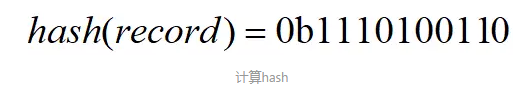
根据上面抛硬币的启发我可以想到如下的估计基数的算法（这里先给出伪代码，后面会有Java实现）：
输入：一个集合
输出：集合的基数
算法：
max = 0
对于集合中的每个元素：
hashCode = hash(元素)
num = hashCode二进制表示中最前面连续的0的数量
if num > max:
max = num
最后的结果是2的(max + 1)次幂
举个例子，对于集合{ele1, ele2}，先求hash(ele1)=0b00110111，它最前面的连续的0的数量为2（又称为前导0），然后求hash(ele2)=0b10010000111，它的前导0数量为0，我们始终只保存前导零数量的最大值，所以最后max是2，我们估计的基数就是2的(2+1)次幂，即8。
为什么最后的max要加1呢？这是一个数学细节，具体要看论文，简单的理解的话，可以像之前抛硬币的例子那样理解，把最长的一串零的后面的一个1或者前面的一个1”顺手”带上进行概率估计。
显然这个算法是非常不准确的，但是这个想法还是很有启发性的，从这个简单的想法跟随下文一步一步优化即可得到最终的比较高精度的HyperLogLog算法。
分桶
最简单的一种优化方法显然就是把数据分成m个均等的部分，分别估计其总数求平均后再乘以m，称之为分桶。对应到前面抛硬币的例子，其实就是把硬币序列分成m个均等的部分，分别用之前提到的那个方法估计总数求平均后再乘以m，这样就能一定程度上避免单一突发事件造成的误差。
具体要怎么分桶呢？我们可以将每个元素的hash值的二进制表示的前几位用来指示数据属于哪个桶，然后把剩下的部分再按照之前最简单的想法处理。
还是以刚刚的那个集合{ele1,ele2}为例，假设我要分2个桶，那么我只要去ele1的hash值的第一位来确定其分桶即可，之后用剩下的部分进行前导零的计算，如下图：
假设ele1和ele2的hash值二进制表示如下：
hash(ele1) = 00110111
hash(ele2) = 10010001
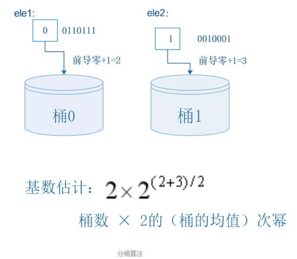
到这里，你大概已经理解了LogLog算法的基本思想，LogLog算法是在HyperLogLog算法之前提出的一个基数估计算法，HyperLogLog算法其实就是LogLog算法的一个改进版。
LogLog算法完整的基数计算公式如下：
到这里，你大概已经理解了LogLog算法的基本思想，LogLog算法是在HyperLogLog算法之前提出的一个基数估计算法，HyperLogLog算法其实就是LogLog算法的一个改进版。
LogLog算法完整的基数计算公式如下：
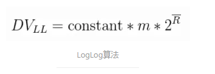
其中m代表分桶数，R头上一道横杠的记号就代表每个桶的结果（其实就是桶中数据的最长前导零+1）的均值，相比我之前举的简单的例子，LogLog算法还乘了一个常数constant进行修正，这个constant具体是多少等我讲到Java实现的时候再说。
调和平均数
前面的LogLog算法中我们是使用的是平均数来将每个桶的结果汇总起来，但是平均数有一个广为人知的缺点，就是容易受到大的数值的影响，一个常见的例子是，假如我的工资是1000元一个月，我老板的工资是100000元一个月，那么我和老板的平均工资就是(100000 + 1000)/2，即50500元，显然这离我的工资相差甚远，我肯定不服这个平均工资。
用调和平均数就可以解决这一问题，调和平均数的结果会倾向于集合中比较小的数，x1到xn的调和平均数的公式如下：
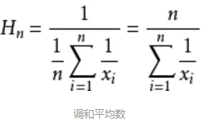
再用这个公式算一下我和老板的平均工资：
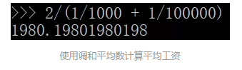
最后的结果是1980元，这和我的工资水平还比较接近，这样的平均工资水平我才比较信服。
再回到前面的LogLog算法，从前面的举的例子可以看出，
影响LogLog算法精度的一个重要因素就是，hash值的前导零的数量显然是有很大的偶然性的，经常会出现一两数据前导零的数目比较多的情况，所以HyperLogLog算法相比LogLog算法一个重要的改进就是使用调和平均数而不是平均数来聚合每个桶中的结果，HyperLogLog算法的公式如下：
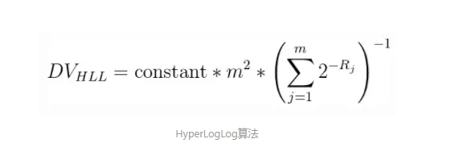
其中constant常数和m的含义和之前的LogLog算法公式中的含义一致，Rj代表(第j个桶中的数据的最大前导零数目+1)，为了方便理解，我将公式再拆解一下：
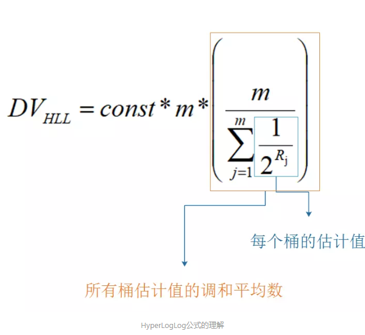
其实从算术平均数改成调和平均数这个优化是很容易想到的，但是为什么LogLog算法没有直接使用调和平均数吗？网上看到一篇英文文章里说大概是因为使用算术平均数的话证明比较容易一些，毕竟科学家们出论文每一步都是要证明的，不像我们这里简单理解一下，猜一猜就可以了。
以上HyperLogLog算法部分来自：https://www.jianshu.com/p/55defda6dcd2
扩展阅读： http://content.research.neustar.biz/blog/hll.html
应用 5：层峦叠嶂 — 布隆过滤器
上一节我们学会了使用 HyperLogLog 数据结构来进行估数，它非常有价值，可以解决很多精确度不高的统计需求。
但是如果我们想知道某一个值是不是已经在 HyperLogLog 结构里面了，它就无能为力了，它只提供了 pfadd 和 pfcount 方法，没有提供 pfcontains 这种方法。
讲个使用场景，比如我们在使用新闻客户端看新闻时，它会给我们不停地推荐新的内容，它每次推荐时要去重，去掉那些已经看过的内容。问题来了，新闻客户端推荐系统如何实现推送去重的？
你会想到服务器记录了用户看过的所有历史记录，当推荐系统推荐新闻时会从每个用户的历史记录里进行筛选，过滤掉那些已经存在的记录。问题是当用户量很大，每个用户看过的新闻又很多的情况下，这种方式，推荐系统的去重工作在性能上跟的上么？
实际上，如果历史记录存储在关系数据库里，去重就需要频繁地对数据库进行 exists 查询，当系统并发量很高时，数据库是很难扛住压力的。
你可能又想到了缓存，但是如此多的历史记录全部缓存起来，那得浪费多大存储空间啊？而且这个存储空间是随着时间线性增长，你撑得住一个月，你能撑得住几年么？但是不缓存的话，性能又跟不上，这该怎么办？
这时，布隆过滤器 (Bloom Filter) 闪亮登场了，它就是专门用来解决这种去重问题的。它在起到去重的同时，在空间上还能节省 90% 以上，只是稍微有那么点不精确，也就是有一定的误判概率。
布隆过滤器是什么？
布隆过滤器可以理解为一个不怎么精确的 set 结构，当你使用它的 contains 方法判断某个对象是否存在时，它可能会误判。但是布隆过滤器也不是特别不精确，只要参数设置的合理，它的精确度可以控制的相对足够精确，只会有小小的误判概率。
波隆过滤器是宁可错杀三千，也不放过一人。用判断url是否是在黑名单集合中，如果你是黑名单，那么我肯定将你拦截，如果不是，我可能错杀将你拦截
套在上面的使用场景中，布隆过滤器能准确过滤掉那些已经看过的内容，那些没有看过的新内容，它也会过滤掉极小一部分 (误判)，但是绝大多数新内容它都能准确识别。这样就可以完全保证推荐给用户的内容都是无重复的。
布隆过滤器基本使用
布隆过滤器有二个基本指令，bf.add 添加元素，bf.exists 查询元素是否存在，它的用法和 set 集合的 sadd 和 sismember 差不多。注意 bf.add 只能一次添加一个元素，如果想要一次添加多个，就需要用到 bf.madd 指令。同样如果需要一次查询多个元素是否存在，就需要用到 bf.mexists 指令。
127.0.0.1:6379> bf.add codehole user1
(integer) 1
127.0.0.1:6379> bf.add codehole user2
(integer) 1
127.0.0.1:6379> bf.add codehole user3
(integer) 1
127.0.0.1:6379> bf.exists codehole user1
(integer) 1
127.0.0.1:6379> bf.exists codehole user2
(integer) 1
127.0.0.1:6379> bf.exists codehole user3
(integer) 1
127.0.0.1:6379> bf.exists codehole user4
(integer) 0
127.0.0.1:6379> bf.madd codehole user4 user5 user6
1) (integer) 1
2) (integer) 1
3) (integer) 1
127.0.0.1:6379> bf.mexists codehole user4 user5 user6 user7
1) (integer) 1
2) (integer) 1
3) (integer) 1
4) (integer) 0
似乎很准确啊，一个都没误判。下面我们用 Python 脚本加入很多元素，看看加到第几个元素的时候，布隆过滤器会出现误判。
# coding: utf-8
import redis
client = redis.StrictRedis()
client.delete("codehole")
for i in range(100000):
client.execute_command("bf.add", "codehole", "user%d" % i)
ret = client.execute_command("bf.exists", "codehole", "user%d" % i)
if ret == 0:
print i
break
Java 客户端 Jedis-2.x 没有提供指令扩展机制，所以你无法直接使用 Jedis 来访问 Redis Module 提供的 bf.xxx 指令。RedisLabs 提供了一个单独的包 JReBloom，但是它是基于 Jedis-3.0，Jedis-3.0 这个包目前还没有进入 release，没有进入 maven 的中央仓库，需要在 Github 上下载。在使用上很不方便，如果怕麻烦，还可以使用 lettuce，它是另一个 Redis 的客户端，相比 Jedis 而言，它很早就支持了指令扩展。
public class BloomTest {
public static void main(String[] args) {
Client client = new Client();
client.delete("codehole");
for (int i = 0; i < 100000; i++) {
client.add("codehole", "user" + i);
boolean ret = client.exists("codehole", "user" + i);
if (!ret) {
System.out.println(i);
break;
}
}
client.close();
}
}
执行上面的代码后，你会张大了嘴巴发现居然没有输出，塞进去了 100000 个元素，还是没有误判，这是怎么回事？如果你不死心的话，可以将数字再加一个 0 试试，你会发现依然没有误判。
原因就在于布隆过滤器对于已经见过的元素肯定不会误判，它只会误判那些没见过的元素。所以我们要稍微改一下上面的脚本，使用 bf.exists 去查找没见过的元素，看看它是不是以为自己见过了。
改成
boolean ret = client.exists("codehole", "user" + (i + 1));
运行后，我们看到了输出是 214，也就是到第 214 的时候，它出现了误判。
误判率大约 1% 多点。你也许会问这个误判率还是有点高啊，有没有办法降低一点？答案是有的。
我们上面使用的布隆过滤器只是默认参数的布隆过滤器，它在我们第一次 add 的时候自动创建。Redis 其实还提供了自定义参数的布隆过滤器，需要我们在 add 之前使用bf.reserve指令显式创建。如果对应的 key 已经存在，bf.reserve会报错。bf.reserve有三个参数，分别是 key, error_rate和initial_size。错误率越低，需要的空间越大。initial_size参数表示预计放入的元素数量，当实际数量超出这个数值时，误判率会上升。
所以需要提前设置一个较大的数值避免超出导致误判率升高。如果不使用 bf.reserve，默认的error_rate是 0.01，默认的initial_size是 100。
接下来我们使用 bf.reserve 改造一下上面的脚本：
# coding: utf-8
import redis
import random
client = redis.StrictRedis()
CHARS = ''.join([chr(ord('a') + i) for i in range(26)])
def random_string(n):
chars = []
for i in range(n):
idx = random.randint(0, len(CHARS) - 1)
chars.append(CHARS[idx])
return ''.join(chars)
users = list(set([random_string(64) for i in range(100000)]))
print 'total users', len(users)
users_train = users[:len(users)/2]
users_test = users[len(users)/2:]
falses = 0
client.delete("codehole")
# 增加了下面这一句
client.execute_command("bf.reserve", "codehole", 0.001, 50000)
for user in users_train:
client.execute_command("bf.add", "codehole", user)
print 'all trained'
for user in users_test:
ret = client.execute_command("bf.exists", "codehole", user)
if ret == 1:
falses += 1
print falses, len(users_test)
Java 版本：
public class BloomTest {
private String chars;
{
StringBuilder builder = new StringBuilder();
for (int i = 0; i < 26; i++) {
builder.append((char) ('a' + i));
}
chars = builder.toString();
}
private String randomString(int n) {
StringBuilder builder = new StringBuilder();
for (int i = 0; i < n; i++) {
int idx = ThreadLocalRandom.current().nextInt(chars.length());
builder.append(chars.charAt(idx));
}
return builder.toString();
}
private List<String> randomUsers(int n) {
List<String> users = new ArrayList<>();
for (int i = 0; i < 100000; i++) {
users.add(randomString(64));
}
return users;
}
public static void main(String[] args) {
BloomTest bloomer = new BloomTest();
List<String> users = bloomer.randomUsers(100000);
List<String> usersTrain = users.subList(0, users.size() / 2);
List<String> usersTest = users.subList(users.size() / 2, users.size());
Client client = new Client();
client.delete("codehole");
// 对应 bf.reserve 指令
client.createFilter("codehole", 50000, 0.001);
for (String user : usersTrain) {
client.add("codehole", user);
}
int falses = 0;
for (String user : usersTest) {
boolean ret = client.exists("codehole", user);
if (ret) {
falses++;
}
}
System.out.printf("%d %d\n", falses, usersTest.size());
client.close();
}
}
运行一下，等待约 1 分钟，输出如下：
total users 100000
all trained
6 50000
我们看到了误判率大约 0.012%，比预计的 0.1% 低很多，不过布隆的概率是有误差的，只要不比预计误判率高太多，都是正常现象。
注意事项
布隆过滤器的initial_size估计的过大，会浪费存储空间，估计的过小，就会影响准确率，用户在使用之前一定要尽可能地精确估计好元素数量，还需要加上一定的冗余空间以避免实际元素可能会意外高出估计值很多。
布隆过滤器的error_rate越小，需要的存储空间就越大，对于不需要过于精确的场合，error_rate设置稍大一点也无伤大雅。比如在新闻去重上而言，误判率高一点只会让小部分文章不能让合适的人看到，文章的整体阅读量不会因为这点误判率就带来巨大的改变。
布隆过滤器的原理
学会了布隆过滤器的使用，下面有必要把原理解释一下，不然读者还会继续蒙在鼓里
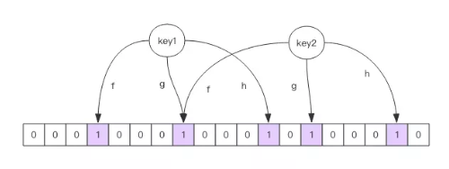
每个布隆过滤器对应到 Redis 的数据结构里面就是一个大型的位数组和几个不一样的无偏 hash 函数。所谓无偏就是能够把元素的 hash 值算得比较均匀。
向布隆过滤器中添加 key 时，会使用多个 hash 函数对 key 进行 hash 算得一个整数索引值然后对位数组长度进行取模运算得到一个位置，每个 hash 函数都会算得一个不同的位置。再把位数组的这几个位置都置为 1 就完成了 add 操作。
向布隆过滤器询问 key 是否存在时，跟 add 一样，也会把 hash 的几个位置都算出来，看看位数组中这几个位置是否都为 1，只要有一个位为 0，那么说明布隆过滤器中这个 key 不存在。如果都是 1，这并不能说明这个 key 就一定存在，只是极有可能存在，因为这些位被置为 1 可能是因为其它的 key 存在所致。如果这个位数组比较稀疏，判断正确的概率就会很大，如果这个位数组比较拥挤，判断正确的概率就会降低。具体的概率计算公式比较复杂，感兴趣可以阅读扩展阅读，非常烧脑
使用时不要让实际元素远大于初始化大小，当实际元素开始超出初始化大小时，应该对布隆过滤器进行重建，重新分配一个 size 更大的过滤器，再将所有的历史元素批量 add 进去 (这就要求我们在其它的存储器中记录所有的历史元素)。因为 error_rate 不会因为数量超出就急剧增加，这就给我们重建过滤器提供了较为宽松的时间。
布隆过滤器的其它应用
布隆过滤器在 NoSQL 数据库领域使用非常广泛，我们平时用到的 HBase、Cassandra 还有 LevelDB、RocksDB 内部都有布隆过滤器结构，布隆过滤器可以显著降低数据库的 IO 请求数量。当用户来查询某个 row 时，可以先通过内存中的布隆过滤器过滤掉大量不存在的 row 请求，然后再去磁盘进行查询。
邮箱系统的垃圾邮件过滤功能也普遍用到了布隆过滤器，因为用了这个过滤器，所以平时也会遇到某些正常的邮件被放进了垃圾邮件目录中，这个就是误判所致，概率很低。
布隆过滤器的原理涉及到较为复杂的数学知识，感兴趣可以阅读下面的链接文章继续深入了解内部原理：布隆过滤器。
应用 6： 简单限流
限流算法在分布式领域是一个经常被提起的话题，当系统的处理能力有限时，如何阻止计划外的请求继续对系统施压，这是一个需要重视的问题。 。
除了控制流量，限流还有一个应用目的是用于控制用户行为，避免垃圾请求。比如在 UGC 社区，用户的发帖、回复、点赞等行为都要严格受控，一般要严格限定某行为在规定时间内允许的次数，超过了次数那就是非法行为。对非法行为，业务必须规定适当的惩处策略。
如何使用 Redis 来实现简单限流策略？
首先我们来看一个常见 的简单的限流策略。系统要限定用户的某个行为在指定的时间里只能允许发生 N 次，如何使用 Redis 的数据结构来实现这个限流的功能？
解决方案
这个限流需求中存在一个滑动时间窗口，想想 zset 数据结构的 score 值，是不是可以通过 score 来圈出这个时间窗口来。而且我们只需要保留这个时间窗口，窗口之外的数据都可以砍掉。那这个 zset 的 value 填什么比较合适呢？它只需要保证唯一性即可，用 uuid 会比较浪费空间，那就改用毫秒时间戳吧。
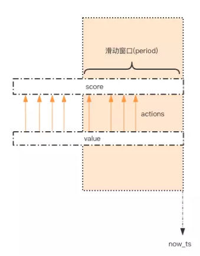
如图所示，用一个 zset 结构记录用户的行为历史，每一个行为都会作为 zset 中的一个 key 保存下来。同一个用户同一种行为用一个 zset 记录。
为节省内存，我们只需要保留时间窗口内的行为记录，同时如果用户是冷用户，滑动时间窗口内的行为是空记录，那么这个 zset 就可以从内存中移除，不再占用空间。
通过统计滑动窗口内的行为数量与阈值 max_count 进行比较就可以得出当前的行为是否允许。用代码表示如下：
Java 版：
public class SimpleRateLimiter {
private Jedis jedis;
public SimpleRateLimiter(Jedis jedis) {
this.jedis = jedis;
}
public boolean isActionAllowed(String userId, String actionKey, int period, int maxCount) {
String key = String.format("hist:%s:%s", userId, actionKey);
long nowTs = System.currentTimeMillis();
Pipeline pipe = jedis.pipelined();
pipe.multi();
pipe.zadd(key, nowTs, "" + nowTs);
pipe.zremrangeByScore(key, 0, nowTs - period * 1000);
Response<Long> count = pipe.zcard(key);
pipe.expire(key, period + 1);
pipe.exec();
pipe.close();
return count.get() <= maxCount;
}
public static void main(String[] args) {
Jedis jedis = new Jedis();
SimpleRateLimiter limiter = new SimpleRateLimiter(jedis);
for(int i=0;i<20;i++) {
System.out.println(limiter.isActionAllowed("rico", "reply", 60, 5));
}
}
}
这段代码还是略显复杂，需要读者花一定的时间好好啃。它的整体思路就是：每一个行为到来时，都维护一次时间窗口。将时间窗口外的记录全部清理掉，只保留窗口内的记录。zset 集合中只有 score 值非常重要，value 值没有特别的意义，只需要保证它是唯一的就可以了。
因为这几个连续的 Redis 操作都是针对同一个 key 的，使用 pipeline 可以显著提升 Redis 存取效率。但这种方案也有缺点，因为它要记录时间窗口内所有的行为记录，如果这个量很大，比如限定 60s 内操作不得超过 100w 次这样的参数，它是不适合做这样的限流的，因为会消耗大量的存储空间。
小结
本节介绍的是限流策略的简单应用，它仍然有较大的提升空间，适用的场景也有限。为了解决简单限流的缺点，下一节我们将引入高级限流算法——漏斗限流。
应用 7：一毛不拔 —— 漏斗限流
漏斗限流是最常用的限流方法之一，顾名思义，这个算法的灵感源于漏斗（funnel）的结
构。
漏洞的容量是有限的，如果将漏嘴堵住，然后一直往里面灌水，它就会变满，直至再也装不进去。如果将漏嘴放开，水就会往下流，流走一部分之后，就又可以继续往里面灌水。如果漏嘴流水的速率大于灌水的速率，那么漏斗永远都装不满。如果漏嘴流水速率小于灌水的速率，那么一旦漏斗满了，灌水就需要暂停并等待漏斗腾空。
所以，漏斗的剩余空间就代表着当前行为可以持续进行的数量，漏嘴的流水速率代表着系统允许该行为的最大频率。
Redis 4.0 提供了一个限流 Redis 模块，它叫 redis-cell。该模块也使用了漏斗算法，并提供了原子的限流指令。有了这个模块，限流问题就非常简单了。该模块只有 1 条指令 cl.throttle，它的参数和返回值都略显复杂，接下来让我们来看看这个指令具体该如何使用。
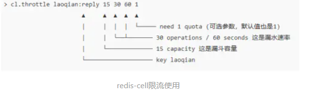
上面这个指令的意思是允许「用户老钱回复行为」的频率为每 60s 最多 30 次(漏水速率)，漏斗的初始容量为 15，也就是说一开始可以连续回复 15 个帖子，然后才开始受漏水速率的影响。
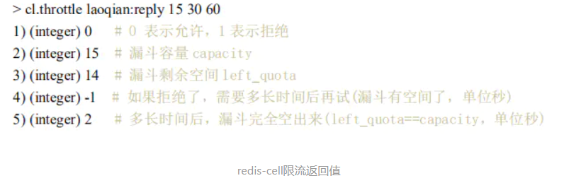
throttle:节流阀,喉咙
在执行限流指令时，如果被拒绝了，就需要丢弃或重试。cl.throttle 指令考虑的非常周到，连重试时间都帮你算好了，直接取返回结果数组的第四个值进行 sleep 即可，如果不想阻塞线程，也可以异步定时任务来重试。
应用9 大海捞针
在平时线上 Redis 维护工作中，有时候需要从 Redis 实例成千上万的 key 中找出特定前缀的 key 列表来手动处理数据，可能是修改它的值，也可能是删除 key。这里就有一个问题，如何从海量的 key 中找出满足特定前缀的 key 列表来？
Redis 提供了一个简单暴力的指令 keys 用来列出所有满足特定正则字符串规则的 key。
127.0.0.1:6379> set codehole1 a
OK
127.0.0.1:6379> set codehole2 b
OK
127.0.0.1:6379> set codehole3 c
OK
127.0.0.1:6379> set code1hole a
OK
127.0.0.1:6379> set code2hole b
OK
127.0.0.1:6379> set code3hole b
OK
127.0.0.1:6379> keys *
1) "codehole1"
2) "code3hole"
3) "codehole3"
4) "code2hole"
5) "codehole2"
6) "code1hole"
127.0.0.1:6379> keys codehole*
1) "codehole1"
2) "codehole3"
3) "codehole2"
127.0.0.1:6379> keys code*hole
1) "code3hole"
2) "code2hole"
3) "code1hole"
这个指令使用非常简单，提供一个简单的正则字符串即可，但是有很明显的两个缺点。
- 没有 offset、limit 参数，一次性吐出所有满足条件的 key，万一实例中有几百 w 个 key 满足条件，当你看到满屏的字符串刷的没有尽头时，你就知道难受了。
- keys 算法是遍历算法，复杂度是 O(n)，如果实例中有千万级以上的 key，这个指令就会导致 Redis 服务卡顿，所有读写 Redis 的其它的指令都会被延后甚至会超时报错，因为 Redis 是单线程程序，顺序执行所有指令，其它指令必须等到当前的 keys 指令执行完了才可以继续。
面对这两个显著的缺点该怎么办呢？
Redis 为了解决这个问题，它在 2.8 版本中加入了大海捞针的指令——scan。scan 相比 keys 具备有以下特点:
- 复杂度虽然也是 O(n)，但是它是通过游标分步进行的，不会阻塞线程;
- 提供 limit 参数，可以控制每次返回结果的最大条数，limit 只是一个 hint，返回的结果可多可少;
- 同 keys 一样，它也提供模式匹配功能;
- 服务器不需要为游标保存状态，游标的唯一状态就是 scan 返回给客户端的游标整数;
- 返回的结果可能会有重复，需要客户端去重复，这点非常重要;
- 遍历的过程中如果有数据修改，改动后的数据能不能遍历到是不确定的;
- 单次返回的结果是空的并不意味着遍历结束，而要看返回的游标值是否为零;
scan 基础使用
在使用之前，让我们往 Redis 里插入 10000 条数据来进行测试
import redis
client = redis.StrictRedis()
for i in range(10000):
client.set("key%d" % i, i)
好，Redis 中现在有了 10000 条数据，接下来我们找出以 key99 开头 key 列表。
scan 参数提供了三个参数，第一个是 cursor 整数值，第二个是 key 的正则模式，第三个是遍历的 limit hint。第一次遍历时，cursor 值为 0，然后将返回结果中第一个整数值作为下一次遍历的 cursor。一直遍历到返回的 cursor 值为 0 时结束。
127.0.0.1:6379> scan 0 match key99* count 1000
1) "13976"
2) 1) "key9911"
2) "key9974"
3) "key9994"
4) "key9910"
5) "key9907"
6) "key9989"
7) "key9971"
8) "key99"
9) "key9966"
10) "key992"
11) "key9903"
12) "key9905"
127.0.0.1:6379> scan 13976 match key99* count 1000
1) "1996"
2) 1) "key9982"
2) "key9997"
3) "key9963"
4) "key996"
5) "key9912"
6) "key9999"
7) "key9921"
8) "key994"
9) "key9956"
10) "key9919"
127.0.0.1:6379> scan 1996 match key99* count 1000
1) "12594"
2) 1) "key9939"
2) "key9941"
3) "key9967"
4) "key9938"
5) "key9906"
6) "key999"
7) "key9909"
8) "key9933"
9) "key9992"
......
127.0.0.1:6379> scan 11687 match key99* count 1000
1) "0"
2) 1) "key9969"
2) "key998"
3) "key9986"
4) "key9968"
5) "key9965"
6) "key9990"
7) "key9915"
8) "key9928"
9) "key9908"
10) "key9929"
11) "key9944"
从上面的过程可以看到虽然提供的 limit 是 1000，但是返回的结果只有 10 个左右。因为这个 limit 不是限定返回结果的数量，而是限定服务器单次遍历的字典槽位数量(不是结果数量)(约等于)。如果将 limit 设置为 10，你会发现返回结果是空的，但是游标值不为零，意味着遍历还没结束。
127.0.0.1:6379> scan 0 match key99* count 10
1) "3072"
2) (empty list or set)
字典的结构
在 Redis 中所有的 key 都存储在一个很大的字典中，这个字典的结构和 Java 中的 HashMap 一样，是一维数组 + 二维链表结构，第一维数组的大小总是 2^n(n>=0)，扩容一次数组大小空间加倍，也就是 n++。
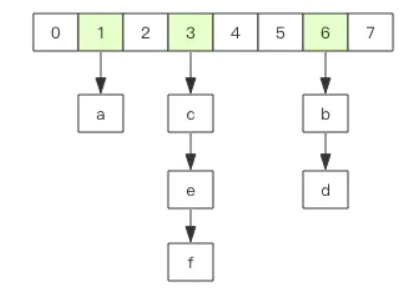
scan 指令返回的游标就是第一维数组的位置索引，我们将这个位置索引称为槽 (slot)。如果不考虑字典的扩容缩容，直接按数组下标挨个遍历就行了。limit 参数就表示需要遍历的槽位数，之所以返回的结果可能多可能少，是因为不是所有的槽位上都会挂接链表，有些槽位可能是空的，还有些槽位上挂接的链表上的元素可能会有多个。每一次遍历都会将 limit 数量的槽位上挂接的所有链表元素进行模式匹配过滤后，一次性返回给客户端。
scan 遍历顺序
scan 的遍历顺序非常特别。它不是从第一维数组的第 0 位一直遍历到末尾，而是采用了高位进位加法来遍历。之所以使用这样特殊的方式进行遍历，是考虑到字典的扩容和缩容时避免槽位的遍历重复和遗漏。???没理解
首先我们用动画演示一下普通加法和高位进位加法的区别
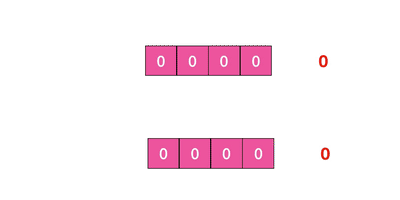
从动画中可以看出高位进位法从左边加，进位往右边移动，同普通加法正好相反。但是最终它们都会遍历所有的槽位并且没有重复。
字典扩容
Java 中的 HashMap 有扩容的概念，当 loadFactor 达到阈值时，需要重新分配一个新的 2 倍大小的数组，然后将所有的元素全部 rehash 挂到新的数组下面。rehash 就是将元素的 hash 值对数组长度进行取模运算，因为长度变了，所以每个元素挂接的槽位可能也发生了变化。又因为数组的长度是 2^n 次方，所以取模运算等价于位与操作。
a mod 8 = a & (8-1) = a & 7
a mod 16 = a & (16-1) = a & 15
a mod 32 = a & (32-1) = a & 31
这里的 7, 15, 31 称之为字典的 mask 值，mask 的作用就是保留 hash 值的低位，高位都被设置为 0。
接下来我们看看 rehash 前后元素槽位的变化。
假设当前的字典的数组长度由 8 位扩容到 16 位，那么 3 号槽位 011 将会被 rehash 到 3 号槽位和 11 号槽位，也就是说该槽位链表中大约有一半的元素还是 3 号槽位，其它的元素会放到 11 号槽位，11 这个数字的二进制是 1011，就是对 3 的二进制 011 增加了一个高位 1。
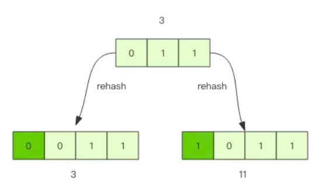
抽象一点说，假设开始槽位的二进制数是 xxx，那么该槽位中的元素将被 rehash 到 0xxx 和 1xxx(xxx+8) 中。 如果字典长度由 16 位扩容到 32 位，那么对于二进制槽位 xxxx 中的元素将被 rehash 到 0xxxx 和 1xxxx(xxxx+16) 中。
对比扩容缩容前后的遍历顺序

观察这张图，我们发现采用高位进位加法的遍历顺序，rehash 后的槽位在遍历顺序上是相邻的。
假设当前要即将遍历 110 这个位置 (橙色)，那么扩容后，当前槽位上所有的元素对应的新槽位是 0110 和 1110(深绿色)，也就是在槽位的二进制数增加一个高位 0 或 1。这时我们可以直接从 0110 这个槽位开始往后继续遍历，0110 槽位之前的所有槽位都是已经遍历过的，这样就可以避免扩容后对已经遍历过的槽位进行重复遍历。
再考虑缩容，假设当前即将遍历 110 这个位置 (橙色)，那么缩容后，当前槽位所有的元素对应的新槽位是 10(深绿色)，也就是去掉槽位二进制最高位。这时我们可以直接从 10 这个槽位继续往后遍历，10 槽位之前的所有槽位都是已经遍历过的，这样就可以避免缩容的重复遍历。不过缩容还是不太一样，它会对图中 010 这个槽位上的元素进行重复遍历，因为缩融后 10 槽位的元素是 010 和 110 上挂接的元素的融合。
渐进式 rehash
Java 的 HashMap 在扩容时会一次性将旧数组下挂接的元素全部转移到新数组下面。如果 HashMap 中元素特别多，线程就会出现卡顿现象。Redis 为了解决这个问题，它采用渐进式 rehash。
它会同时保留旧数组和新数组，然后在定时任务中以及后续对 hash 的指令操作中渐渐地将旧数组中挂接的元素迁移到新数组上。这意味着要操作处于 rehash 中的字典，需要同时访问新旧两个数组结构。如果在旧数组下面找不到元素，还需要去新数组下面去寻找。
scan 也需要考虑这个问题，对与 rehash 中的字典，它需要同时扫描新旧槽位，然后将结果融合后返回给客户端。
更多的 scan 指令
scan 指令是一系列指令，除了可以遍历所有的 key 之外，还可以对指定的容器集合进行遍历。比如 zscan 遍历 zset 集合元素，hscan 遍历 hash 字典的元素、sscan 遍历 set 集合的元素。
它们的原理同 scan 都会类似的，因为 hash 底层就是字典，set 也是一个特殊的 hash(所有的 value 指向同一个元素)，zset 内部也使用了字典来存储所有的元素内容，所以这里不再赘述。
大 key 扫描
有时候会因为业务人员使用不当，在 Redis 实例中会形成很大的对象，比如一个很大的 hash，一个很大的 zset 这都是经常出现的。这样的对象对 Redis 的集群数据迁移带来了很大的问题，因为在集群环境下，如果某个 key 太大，会数据导致迁移卡顿。另外在内存分配上，如果一个 key 太大，那么当它需要扩容时，会一次性申请更大的一块内存，这也会导致卡顿。如果这个大 key 被删除，内存会一次性回收，卡顿现象会再一次产生。
在平时的业务开发中，要尽量避免大 key 的产生。
如果你观察到 Redis 的内存大起大落，这极有可能是因为大 key 导致的，这时候你就需要定位出具体是那个 key，进一步定位出具体的业务来源，然后再改进相关业务代码设计。
那如何定位大 key 呢？
为了避免对线上 Redis 带来卡顿，这就要用到 scan 指令，对于扫描出来的每一个 key，使用 type 指令获得 key 的类型，然后使用相应数据结构的 size 或者 len 方法来得到它的大小，对于每一种类型，保留大小的前 N 名作为扫描结果展示出来。
上面这样的过程需要编写脚本，比较繁琐，不过 Redis 官方已经在 redis-cli 指令中提供了这样的扫描功能，我们可以直接拿来即用。
redis-cli -h 127.0.0.1 -p 7001 –-bigkeys
如果你担心这个指令会大幅抬升 Redis 的 ops 导致线上报警，还可以增加一个休眠参数。
redis-cli -h 127.0.0.1 -p 7001 –-bigkeys -i 0.1
上面这个指令每隔 100 条 scan 指令就会休眠 0.1s，ops 就不会剧烈抬升，但是扫描的时间会变长。
扩展阅读
感兴趣可以继续深入阅读 美团近期修复的Scan的一个bug
参考
https://www.jianshu.com/p/305e65de1b13
This blog is under a CC BY-NC-SA 3.0 Unported License
本文链接：http://hogwartsrico.github.io/2020/06/08/Usage-of-redis/